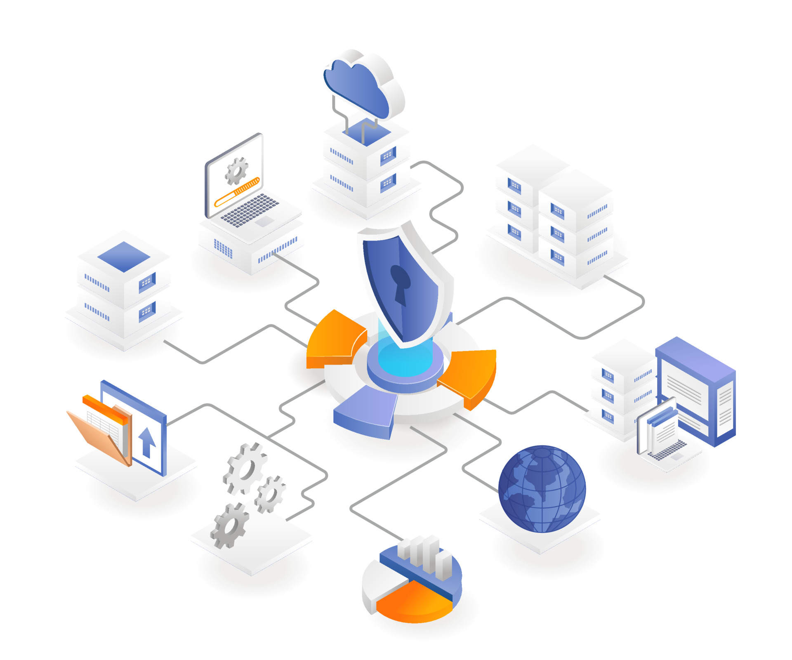

Hi, I'm Gati, A Network Security Architect & Software Developer
Saya adalah seorang Network Security Architect dengan pengalaman lebih dari 10 tahun dalam merancang, mengimplementasikan, dan mengamankan infrastruktur jaringan komunikasi skala enterprise. Fokus utama saya adalah mengubah kebutuhan bisnis yang kompleks menjadi arsitektur jaringan yang reliable, scalable, dan tahan terhadap ancaman siber.
See my Portofolio & Case StudyAbout Me
Logika analitis yang tajam merupakan inti dari setiap arsitektur jaringan yang saya bangun. Dengan latar belakang pendidikan di bidang Matematika (Statistika Terapan & Komputasi) serta Sistem Informasi, saya menggabungkan presisi matematis dengan kedalaman teknis untuk merancang solusi infrastruktur digital yang cerdas dan strategis.
Memulai langkah profesional pada tahun 2015, saya telah menghabiskan satu dekade terakhir menangani berbagai proyek skala enterprise. Fokus utama saya adalah Network Security Architecture, di mana saya tidak hanya membangun konektivitas, tetapi memastikan setiap lapisan desain memiliki ketahanan (resilience) yang tinggi melalui implementasi kebijakan keamanan yang ketat dan segmentasi jaringan yang tepat.
Kapabilitas teknis saya divalidasi oleh berbagai sertifikasi internasional di bidang Network & Security. Saya berdedikasi untuk mentransformasi kebutuhan bisnis yang kompleks menjadi infrastruktur IT yang aman, reliable, dan scalable, guna menjaga ketersediaan layanan dan integritas data di tengah dinamika ancaman keamanan infrastruktur saat ini.
Pilar Keahlian Saya
- Arsitektur Strategis: Merancang topologi optimal, cloud networking, dan membuat dokumentasi desain tingkat tinggi.
- Network Security Expert: Implementasi Zero Trust dan network segmentation.
- Otomatisasi: Menggunakan Python dan Infrastructure as Code untuk efisiensi operasional.


Skills
Arsitektur Jaringan & Komunikasi
Perancangan topologi (LAN/WAN/Data Center), Dokumentasi desain *high-level* dan *low-level* (HLD/LLD).
Network Security Analyst
Implementasi Zero Trust Architecture, konfigurasi Firewall/IDS/IPS (Fortinet, Cisco), Analisis dan mitigasi kerentanan keamanan jaringan.
Otomatisasi & Skrip
Scripting (Python, Bash) untuk otomatisasi tugas operasional dan monitoring jaringan. Penggunaan Ansible untuk Infrastructure as Code (IaC).
Professional Certification
Portofolio & Case Study
Proyek-proyek inti yang menampilkan kemampuan saya dalam perancangan arsitektur, implementasi keamanan, dan otomatisasi jaringan.
Migrasi Data Center ke Arsitektur Multi-Cloud
Menganalisis kebutuhan performa dan merancang topologi hibrida untuk transisi mulus 5 Data Center warisan ke AWS VPC dan Azure VNet.
Lihat Studi Kasus LengkapImplementasi Zero Trust di Jaringan Enterprise
Perancangan kebijakan keamanan Zero Trust, segmentasi jaringan mikro, dan deployment NGFW untuk mengurangi *lateral movement* ancaman siber.
Lihat Studi Kasus LengkapOtomatisasi Provisioning Switch menggunakan Python/Ansible
Mengembangkan skrip Python dan *playbook* Ansible untuk mempercepat *deployment* perangkat jaringan baru dari manual 2 jam menjadi 10 menit.
Lihat Studi Kasus LengkapIngin melihat lebih banyak karya saya, termasuk semua *coding repository* dan diagram lainnya?
Semua Proyek (GitHub/Blog)CONTACT ME
For Network consultancy services, please get in touch. Jika Anda tertarik dengan arsitektur jaringan atau ingin berdiskusi mengenai kolaborasi proyek, silakan hubungi saya melalui email profesional di:
Location Jakarta, Indonesia
Email gatigaara@gmail.com
Contact Number +62 82297175066
Languages Indonesian, English